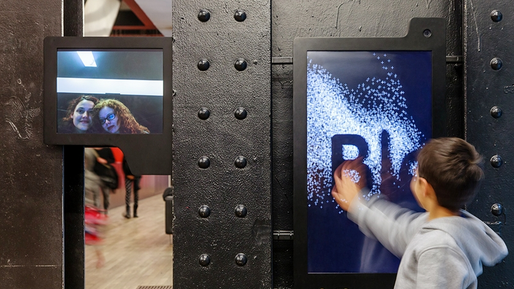
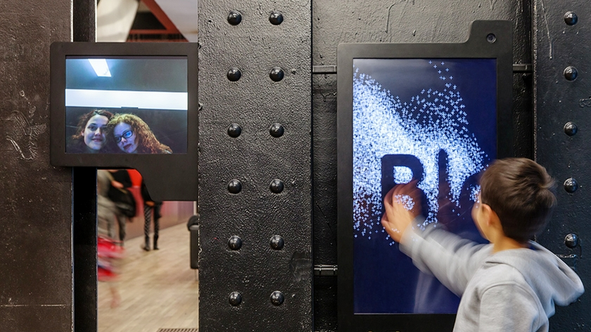

Tate Modern
Bloomberg Connects
Multi-locational interactive displays at Tate Modern Museum, produced by The Workers and Jason Brudges Studio. I had the pleasure to work on the software development for a part of this project: the stairwell displays.
The stairwell displays is made up of 50+ Raspberry Pi devices. They shows the visitor’s posts and real-time announcements of the museum which managed by the central database. Each Rasberry Pi device is connected via web-libsocket and HTTP protocol. These displays animate in sync with the other devices. I wrote a custom software in openFramework and Python scripts running on Rasbian OS.

 
